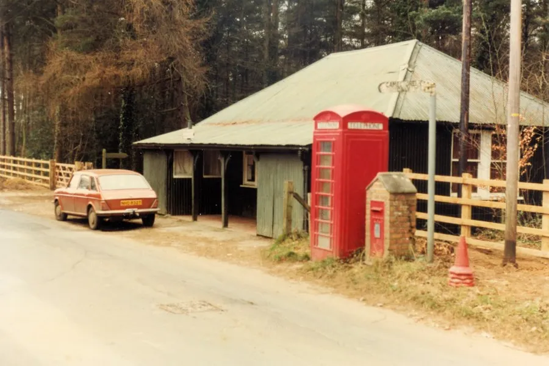
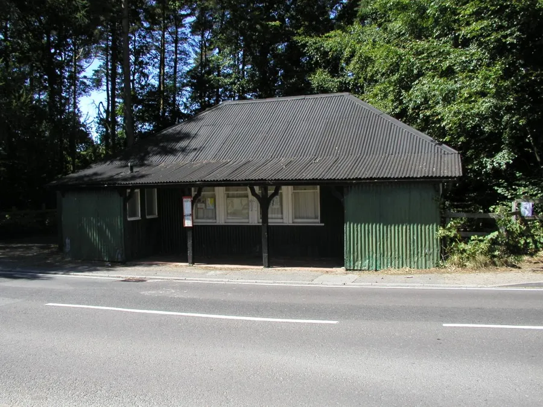
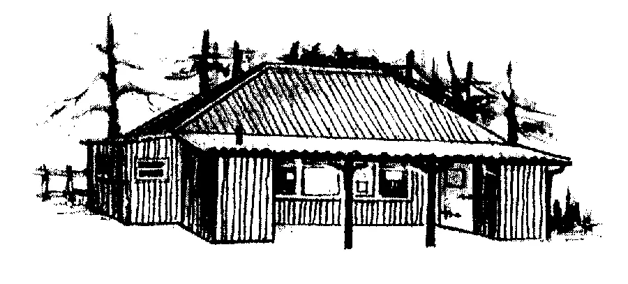
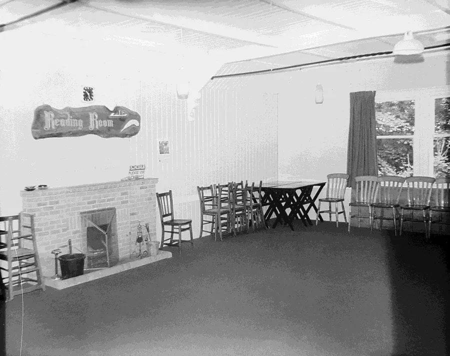

The Reading Room
by Adrian King

The Reading Room situated opposite Camel Green Road in Station Road was built in 1904 through the generosity of Lord and Lady Salisbury. It was proposed to open the building on Wednesday 18th January 1905. At the time there was no Village Hall and their concern was that the youth of the Village had nowhere to gather. The then Lord Salisbury donated the land and Lady Salisbury had the Room built at her own expense with Squire Churchill providing the books and magazines.

The intended use was for ‘Silent Reading’ on Sundays with the watchful eye of either the Vicar or the Headmaster of St. James School. Ludo, cards, boxing, and billiards were later introduced. The room was initially open each evening and for two hours on a Sunday. The weekly fee for the use of the room was 2d rising to 4d after the First World War.
Many other parishes had reading rooms to give the local people a chance to improve their education in this way. It is known to many a passer-by as 'The Little Tin Shed'.
On Friday 27th January 1905 a committee was appointed consisting of
| Lord Salisbury | President |
| Mr. J. P. Neave | Vice-president |
| Mr. Hayne | Secretary and Treasurer |
| Rev. Sanderson | Chairman |
| Mr. T. Thorne | Committee |
| Mr. Oxford | Committee |
| Mr. Oliver | Committee |
| Mr. W. Read | Committee |
| Mr. F. Inkpen | Committee |
| Mr. Elton | Committee |
This committee was not large enough to manage the building and more were added later
| Mr. Forsey | Committee |
| Mr. Stratten | Committee |
| Mr. J. Hayter | Committee |
| Mr. W. H. Read | Committee |
| Mr. J. Rose | Committee |
Money was raised by having various entertainments. A minstrel show was organised for January 24th 1905 to raise funds for an organ which raised £3. A farce called Cherry Bounce was presented on March 2nd 1905 to raise funds to purchase a bagatelle table which was going to cost £13.
At the start it was decided by the committee to close on Bank Holidays but this was later rescinded because of the outcry.
Rev. Sanderson commented in the parish news “That it was rather a large order for members to expect that everything would go smoothly during the first year of existence and that a man who never made a mistake never did anything worth doing.”

By the time of the first annual meeting in November 1905 it was noticed that attendance was beginning to fall away. The outcome of this was that it was decided to close the Reading Room during the months of June, July, and August. Opening in the evenings at 7.00 pm in April and May and 6.00 pm during the winter months of September to March. It was also decided to reduce the annual subscription to four shillings and sixpence.
There was a financial crisis in June 1906 as due to the annual subscription being paid in instalments there was not enough money to pay the monthly paper bill. This forced a closure for the summer of 1906 with the Rev. Sanderson intending to call a meeting at the end of September in order to discuss winter opening.

Rev. Sanderson had paid the outstanding paper bills. So that the vicar could be repaid it was decided to hold some concerts. Mr. Rawlings gave two concerts that winter — one with his gramophone in the school hall and a second in the Reading Room.
Mr. Rawlings was very popular and was asked to stand on the committee as secretary and treasurer. The reading room did well for a time but unfortunately Mr. Rawlings left the village in March 1907.
The vicar wrote in the parish news
“We trust that all members will show their appreciation of this improvement by making and keeping the Reading Room as a quiet and orderly place where anyone who is willing to pay his subscription may come and spend a quiet and pleasant time without being annoyed by those pranks which, however pleasant and funny they may be to some people, are not appreciated by everyone.”
Mr. Percy Neave paid outstanding debts in July 1907 and it was still anticipated to open the Reading Room in the winters of 1908 – 10. Mr. Wesley Brewer was elected as secretary.
In November 1910 in order to purchase a billiard table costing about £20 for the use of members the committee proposed to sell shares. Share’s costing five shillings each could be purchased from the vicar or secretary.
A game of billiards was 3d to cover running costs and it was expected that the table would earn at least 2/6 a week. Donald Hibberd says it was a club that “Started as a mini-library and developed into a games room.”
After the village hall was built the Reading Room was used less for village functions. During the Second World War it was used by the A.R.P and Army Canteens from which the famous Woolton Pies were distributed.
Over the years the black round stove and oil lamps have disappeared and many changes have been made to provide modern facilities. In the mid-nineties there was a £2,000 kitchen extension.

It continued to be used for many village functions from meetings to children’s parties. But its days were thought to be numbered if the proposed development of Strouds Firs went ahead and the new all-purpose community centre was built. That now seems to be on the backburner.
The St. James Church run Forest Edge Café meets in the Reading Room — Monday to Wednesday every Week.